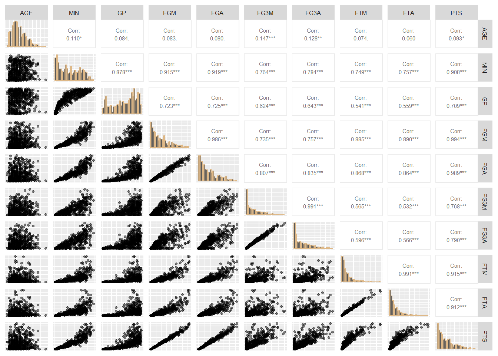

rm(list = ls())Algoritmo de Fisher Scoring
# install.packages("GGally", repos = "http://cran.r-project.org")
library(GGally)
library(ggplot2)
library(dplyr)
library(readxl)Regresión Poisson
- Sean \(Y_1, Y_2, \cdots, Y_n\) variables aleatorias independientes con distribución Poisson, tales que
\[Y_i \sim Poisson(\mu_i) \quad i=1,2,\cdots,n.\] Sabemos que en la distribución Poisson, el parámetro canónico está dado por \(\theta_i = \ln(\mu_i)\).
En el contexto de un modelo de regresión, el predictor lineal \(\eta_i\) está dado por
\[\eta_i = \beta_0 + \beta_1X_1 + \beta_2X_2 + \cdots + \beta_pX_p,\] y la relación entre el predictor \(\eta_i\) y la media \(\mu_i\) está dada por
\[\eta_i = \ln(\mu_i) \Rightarrow \mu_i = \exp(\eta_i).\]
La función de log-verosimilitud es como sigue
\[ \begin{align*} \mathcal{l}(\beta) &= \sum_{i=1}^n \left[y_i\ln(\mu_i) - \mu_i - \ln(y_i!)\right]\\ &= \sum_{i=1}^n \left[y_i x_i^t \beta - \exp(x_i^t \beta) - \ln(y_i!)\right] \end{align*} \]
La función score (vector de primeras derivadas) está dado por
\[\frac{\partial \mathcal{l}(\beta)}{\partial \beta} = \sum_{i=1}^n (y_i - \mu_i)x_i.\] La Matriz de Información de Fisher es como sigue
\[\mathcal{J}(\beta) = Inf = X^tWX\] donde
\[W = diag\left(\frac{\left(\frac{\partial \mu_i}{\partial \eta_i}\right)^2}{Var(y_i)}\right)\] \[\frac{\partial \mu_i}{\partial \eta_i} = \mu_i, \quad \quad \quad \frac{\partial \eta_i}{\partial \mu_i} = \frac{1}{\mu_i}\] Como en la distribución Poisson, \(Var(Y_i) = \mu_i\), se tiene que
\[w_{ii} = \frac{\mu_i^2}{\mu_i} =\mu_i\] y la variable ajustada \(\widetilde{y}\) está dada por \[\widetilde{y} = \eta_i + (y_i - \mu_i)\frac{\partial \eta_i}{\partial \mu_i} = \eta_i + (y_i - \mu_i)\frac{1}{\mu_i}\]
De esta forma, el Algoritmo de Fisher-Scoring queda determinado por los siguientes pasos:
- Iniciar el algoritmo con un valor inicial para \(\beta\). Se usará una estimación inicial de \(\beta_0^{(0)}\) usando la media global de \(y\).
\[ \beta_0^{(0)} = \log\left(\frac{1}{n}\sum_{i=1}^n y_i\right), \quad \beta_1^{(0)} = 0, \quad \cdots, \quad \beta_p^{(0)} = 0. \]
- obtener \(\beta^{(k+1)}\) a partir de \(\beta^{(k)}\) usando la siguiente expresión
\[\beta^{(k+1)} = \left(X^tW^{(k)}X\right)^{-1}X^tW^{(k)}\widetilde{y}\]
- repetir (2) hasta satisfacer un criterio de convergencia. El criterio de convergencia que se usará en este caso es el siguiente
\[\|\beta^{(k+1)} - \beta^{(k)}\| < \epsilon, \quad \quad \epsilon=0.0000001\]
A continuación se presenta el algoritmo para encontrar una aproximación de \(\beta\) usando datos reales.
Datos de jugadores de baloncesto de la temporada 2022-2023, los cuales incluyen la edad del jugador (AGE), tiempo en minutos jugado en la temporada (MIN), juegos participados (GP), tiros de campo hechos (FGM), tiros de campo intentados (FGA), tiros de campo hechos de 3 puntos (FG3M), tiros de campo intentados de 3 puntos (FGA) y puntos realizados en la temporada (PTS).
players <- read_excel("players_202223.xlsx") %>%
select(AGE, MIN, GP, FGM, FGA, FG3M, FG3A, FTM, FTA, PTS)players %>%
ggpairs(
upper = list(continuous = wrap("cor", size = 3)),
diag = list(continuous = wrap("barDiag", colour = "burlywood")),
lower = list(continuous = wrap("points", alpha = 0.5, shape = 20,
fill = "lightblue")),
axisLabels = "none")
En la matriz de dispersión realizada se usó el coeficiente de correlación de Pearson, el cuál nos muestra que la mayoría de las variables tienen una alta correlación lineal con la variable respuesta, puntos realizados en la temporada (PTS).
Se puede evidenciar que entre las variables tambien se presentan algunas correlaciones casi perfectas, como se presentan entre las variables FGM y FGA, FG3M y FG3A, y FTM y FTA, lo cual tiene sentido ya que los pares de variables mencionadas deberían estar relacionadas entre sí, ya que a nivel general una variable es el número de intentos totales de tiros, mientras que la otra es cuántos de esos tiros lograron ser encestados.
Por otro lado se logra ver una baja correlación lineal entre la variable AGE y el resto de variables, incluyendo la variable respuesta PTS, además de esto en los gráficos de dispersión no se puede evidenciar ningún tipo de correlación entre las variables mencionadas, puesto que los datos son bastante dispersos.
x1 <- as.matrix(players %>% select(-last_col()))
X <- model.matrix(~x1)
y <- players$PTSset.seed(1040)
# Creación de la función
fisher_scoring_poisson <- function(y, X, beta_init, tol = 1e-7, max_iter = 100){
beta <- beta_init
for (iter in 1:max_iter){
eta <- X %*% beta
mu <- exp(eta)
W <- diag(as.vector(mu))
z <- eta + (y - mu) / mu
beta_new <- solve(t(X) %*% W %*% X) %*% (t(X) %*% W %*% z)
if (max(abs(beta_new - beta)) < tol) {
message("Convergió en la iteración ", iter)
return(as.vector(beta_new))
}
beta <- beta_new
}
warning("No convergió")
return(as.vector(beta))
}## Ejecutamos
beta_est <- fisher_scoring_poisson(y = y, X = X,
beta_init = c(log(mean(y)), rep(0, ncol(X)-1)),
max_iter = 100)Convergió en la iteración 7names(beta_est) <- colnames(X)
beta_est (Intercept) x1AGE x1MIN x1GP x1FGM
4.1116424116 0.0076175147 0.0000747274 0.0181945865 0.0019076539
x1FGA x1FG3M x1FG3A x1FTM x1FTA
0.0002784068 0.0036404818 -0.0011454886 0.0001737093 0.0002852445 Estimación de los parámetros usando la función glm del paquete stats
modelo_poisson <- glm(y ~ X - 1, family = poisson(link = "log"))
modelo_poisson$coefficients X(Intercept) Xx1AGE Xx1MIN Xx1GP Xx1FGM
4.1116424116 0.0076175147 0.0000747274 0.0181945865 0.0019076539
Xx1FGA Xx1FG3M Xx1FG3A Xx1FTM Xx1FTA
0.0002784068 0.0036404818 -0.0011454886 0.0001737093 0.0002852445